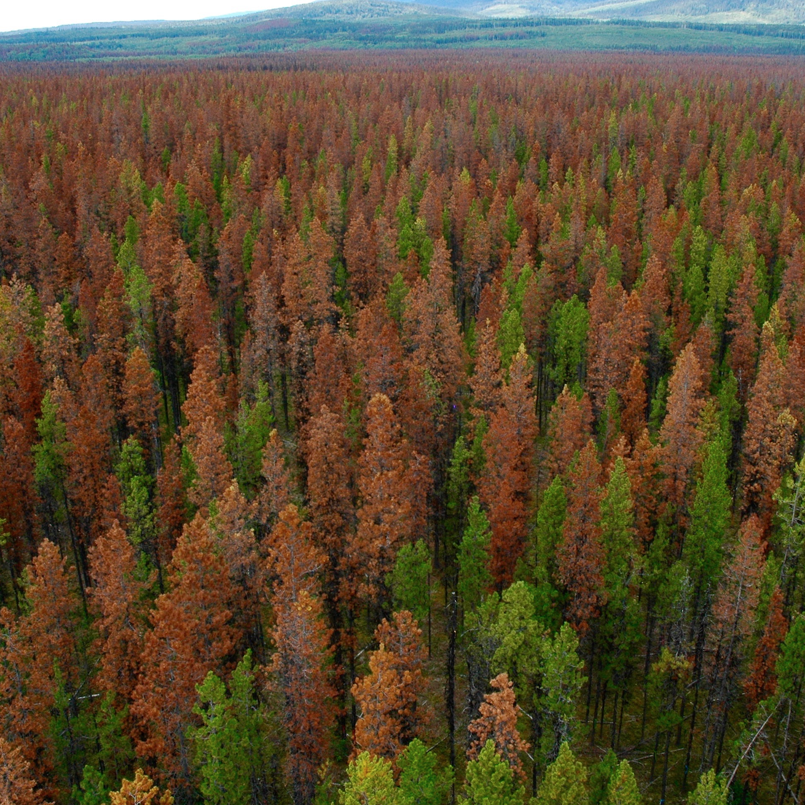
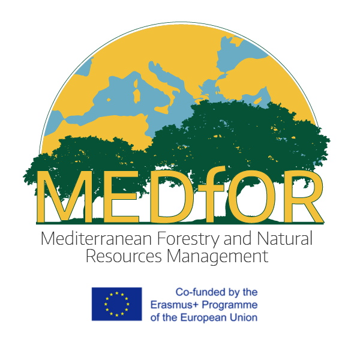
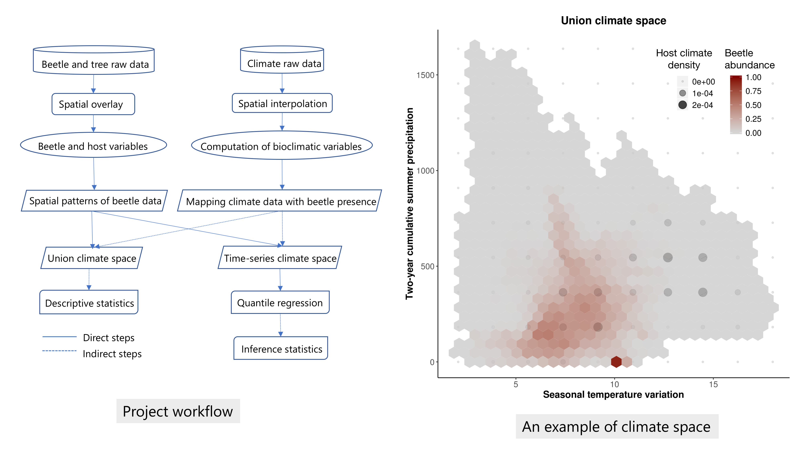
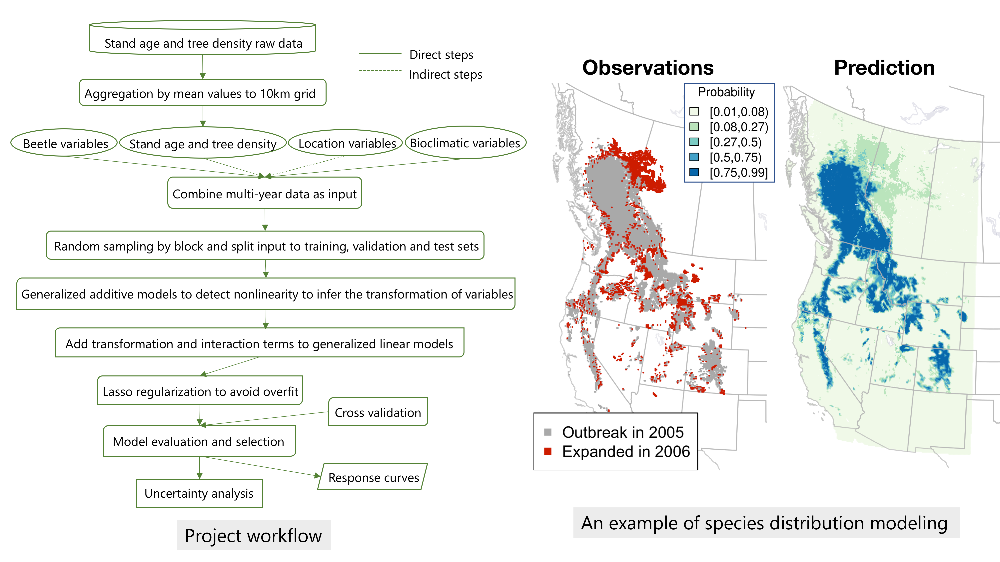
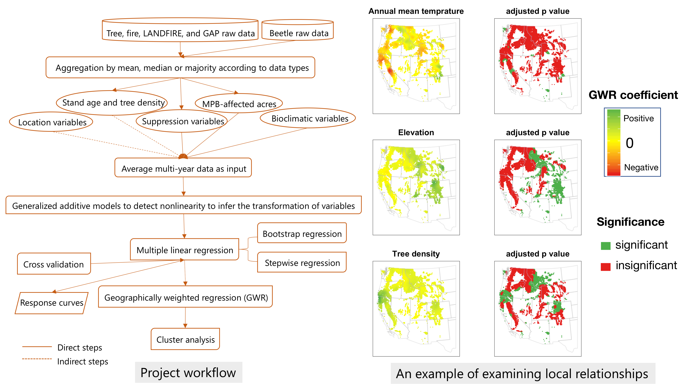
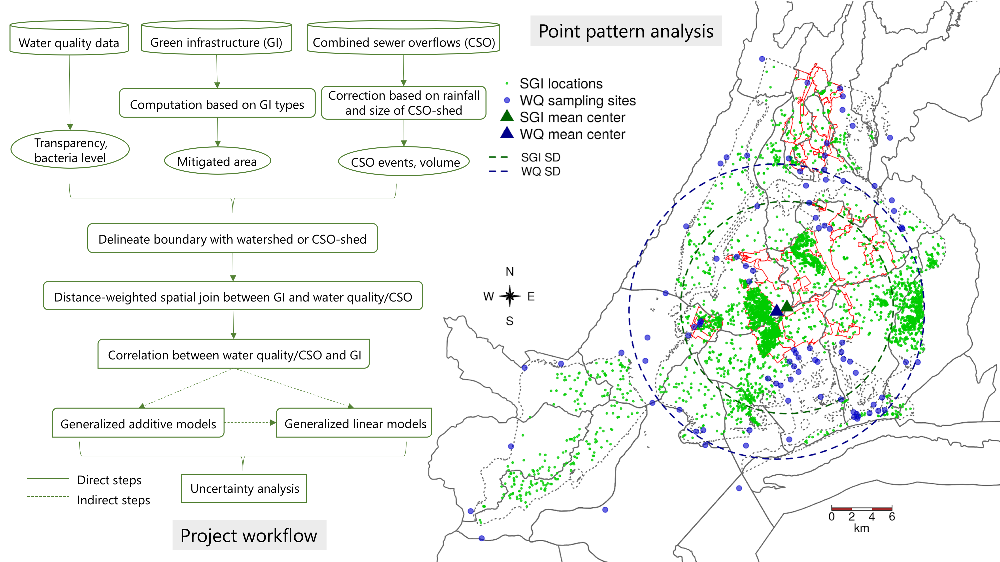
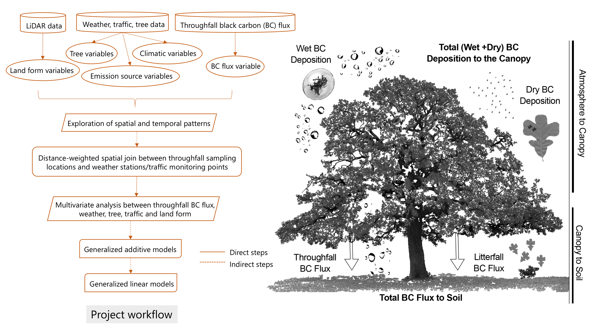

What are the rates, pathways and determinants of air pollutants?
Experience
I have worked on environmental research for ten years with experience as a leader and collaborator

2015-2019
Environmental Scientist
I completed a doctoral dissertation exploring the cross-scale effects of climate change and forest governance on large-scale forest disturbance. I also worked as a spatial analyst on two urban environmental case studies with different groups of environmental and social scientists.

2013-2015
Erasmus Mundus Scholar
I was funded to study courses on forestry and natural resource management in three Mediterranean countries (Portugal, Spain and Italy). The courses cover GIS, remote sensing, modeling, forest management, governance and policy. I graduated with honors and earned a joint master degree between the University of Lisbon and the University of Padua.
2011-2013
Project Manager
I worked full time on supply chain management with a focus on vendor development in the retail industry for 19 months, and then managed part-time projects on geostatistical research, teaching organic chemistry and consulting for studying abroad for 10 months.
2008-2011
Landscape Ecologist
I focused on phylogeography of the oriental oak in East Asia in a master's thesis while participating in multiple research projects on plant ecology. I completed courses on landscape/urban ecology, landscape architecture and planning and plan physiology. I taught and graded for a class on Ecotoxicology experiments.
Start from
college
graduation
About me
Dongmei Chen
I grew up in a village in Southeast China, where I developed an interest in nature while working with my mother on a farm or in the forest. After choosing forestry as my major in college, I became very interested in remote sensing and GIS technologies and how to use them to solve environmental problems. To enhance my knowledge and research experience in environmental studies, I continued graduate education in landscape ecology in China and natural resource management in Europe. My travel as an Erasmus Mundus scholar gave me opportunities to learn about different cultures and landscapes, and I started to think more like a geographer. While studying geography, I gradually trained myself as a spatial analyst for my doctoral research. Working on my dissertation has inspired my long-term career choice as an environmental scientist, using data science skills to bridge gaps between natural and social science and between science and policy.
The project explores the climatic niche of the mountain pine beetle in North America by answering two research questions: 1) what are the climate-space constraints of beetle outbreak range expansion, and 2) whether and how has the beetle climate space changed during the recent geographical outbreak expansion?

Over the last two decades, the native mountain pine beetle (Dendroctonus ponderosae) has expanded into northern British Columbia and Alberta, an unprecedented change over the 20th century that has been broadly attributed to a warming climate. We examine whether areas of erupting beetle populations have been simply tracking the climate (with the climatic niche of the beetle remaining static) or whether the beetle range has expanded into a different climate space with the geographical expansion. We computed annual (1996-2015) bioclimatic variables that are known to be relevant for beetle survivorship using interpolated climatic data. We then plotted union and time-series climate spaces to show the climatic constraints of the range expansion. We also used quantile regression combined with a bootstrap test to estimate changes in the thresholds of the beetle’s climate space during range expansion and between the defined core regions and expanded regions. We found that minimum temperatures, and the seasonal variation of temperature, are the variables most constraining the climate space. The medians of constraint variables have been relatively stable. However, the lower-quantile temperatures in the beetle outbreak range have decreased and temperature in the upper quantiles has increased, mirroring a regional increase in temperature variability. Although the long-term climatic changes showed a warmer-trending climate and drier-trending summers in the current beetle-outbreak range, the beetle populations might have also increased their thresholds to minimum temperatures. Our results suggest that the mountain pine beetle has been constrained to warmer space with lower temperature variation but recently has expanded its climate space to colder regions.
Key words: Climate space, mountain pine beetle, range expansion, climate change, North America
Notes: This is a dissertation chapter (Committee members: Patrick J. Bartlein, Daniel G. Gavin, Christopher Bone).
The project models mountain pine beetle distribution using machine learning to answer the following research questions: 1) how has climate change contributed to the recent MPB range expansion in North America? 2) what is the relative importance of climatic and biotic predictors in the model prediction?

Aim: Climatic warming is widely attributed as the underlying cause of the recent expansion of mountain pine beetle (MPB) outbreaks, but the evaluation of climatic influences on continental-scale beetle infestations is incomplete. We assessed the relative contribution of climatic and biological factors to the beetle expansion at a continental scale.
Location: North America.
Method: We used aerial mapping data from 1997 to 2016 in British Columbia, Alberta and western United States to identify the presence and absence of MPB outbreaks. We included bioclimate, location, beetle pressure, and vegetation variables in the predictor groups. Generalized additive models were applied to detect nonlinear relationship between each predictor and the response variable, and the results were used to transform the predictors. Both transformed and interactive terms among predictor groups were also added into models to evaluate the different impacts of variable groups. Meanwhile, we used a cross-validation method combined with a block sampling approach by grouping 10km grid cells in 65km × 60km blocks and randomly sampling 80% of the data. All predictors were z-scored to compare their contributions. We performed logistic regression with the ‘lasso’ regularization and evaluated models with accuracy and information criterion methods. Finally, we examined the relationship between each climatic and non-climatic predictor and outbreak probability with consideration of impacts from the rest predictors, and the uncertainties of predictions.
Results: Our best models predicted beetle outbreak across all years with an accuracy of 0.94 and a R-squared of 0.72. Models with additional location and beetle pressure variables explaining spatial and temporal autocorrelation significantly increased predicted outbreak probability from models with bioclimate variables only, however, our models predicted low probability in the northeastern expanded regions. We found that seasonal mean temperatures and their interaction with location variables and tree density are more influential than other predictors. We also found that bioclimate related to beetle dispersal and host susceptibility has higher coefficients than cold-related variables in the models with z-scored predictors. Although the clustering patterns of commission and omission errors were reduced with the increase of model accuracy, omission errors in the northern expanded range remained.
Main conclusion: Beetle populations have responded strongly to mild climatic warming and reached unprecedented outbreaks in the northern expanded regions. This is likely due to complex interactions between the beetle, hosts and landscape under climate change. Including factors such as local adaptation, species dispersal, evolutionary interactions, and forest management may provide a better understanding of the recent MPB outbreak expansion.
Key words: Mountain pine beetle, range expansion, climate change, bioclimate variables, species distribution modeling, generalized linear models, spatial autocorrelation
Notes: This is a dissertation chapter (Committee members: Daniel G. Gavin, Patrick J. Bartlein, Christopher Bone; Collaborator: Damian Satterthwaite-Phillips).
Fire suppression
The project evaluates fire suppression and its consequences on vegetation dynamics and fire regimes, and thus its relationship with MPB outbreaks, to answer the following research questions: 1) how has fire suppression contributed to MPB outbreaks in the American West? 2) what are the relative roles of climatic and non-climatic factors in driving MPB outbreaks across spatial scales?

Fire suppression over the past several decades has substantially impacted the composition of American coniferous forests and is widely claimed to be a major contributing factor of the recent increase of mountain pine beetle (MPB) outbreaks. However, a direct, broad-scale, evaluation of the relationship between fire suppression and beetle outbreaks has been missing. Using multivariate linear models, geographically weighted regression, and cluster analysis, we explored the relationship between fire suppression and MPB-affected acres, and identified the regions where non-climatic factors, including fire suppression, that have been more locally-influential than climatic factors on MPB outbreaks. We found that the number of fires suppressed, stand age, tree density, and vegetation condition class are positively correlated with MPB-affected acres. Forests where disturbance events were allowed were subject to fewer to MPB outbreaks, while forests with intensive forest management activities were more susceptible to beetle attacks. We determined that the suppression of frequent mixed-severity fires has increased stand age, tree density and vegetation departure that became more susceptible to MPB, and with a warming climate, large-scale tree mortality was triggered by MPB. We also found that strong human influences exist widely. Although bioclimatic variables generally weight higher than fire suppression variables on the global level, topographic and anthropogenic factors have significant impacts on MPB outbreaks on the local level. Furthermore, suppression of disturbances has been more predictive of outbreaks particularly in the middle Rockies. Therefore, our results provide support for the role of fire suppression in beetle outbreaks, whose significance varies geographically across to the west.
Keywords: Fire suppression, mountain pine beetle, multivariate linear regression, geographically weighted regression, cluster analysis, American West
Notes: This is a dissertation chapter (Committee members: Christopher Bone, Daniel G. Gavin, Patrick J. Bartlein).
Water quality
The project examines the relationship between stormwater green infrastructure and water quality in New York City. My role is to collect, clean and analyze data using spatial statistical methods to explore the correlation between SGI and water quality.

(Abbreviations in the right figure: SGI - stormwater green infrastructure; WQ - water quality; SD - standard distance)
Managing urban water quality is challenged by the speed of urbanization and climate change. Stormwater runoff pollution in surface water and combined sewer overflows (CSO) jeopardize ecosystems and affect the quality of life in growing urban areas. Stormwater green infrastructure (SGI) is growing in popularity as a mitigation strategy to address these challenges. However, research examining the effects of SGI on water quality and CSO at a city or intra-urban scale remains limited. We collected geospatial data on SGI, harbor water quality, CSO and climate in New York City. The spatial distribution of stormwater green infrastructure (SGI) is more clustered than random in New York City. The exploration of SGI impacts on water quality considers the variation of mitigation effects from different SGI types and locations of priority combined sewer overflows (CSO) watersheds. We first calculated mitigated area for the majority of the SGI points according to the types of SGI using QGIS. The locations of SGI and water quality sampling points or CSO are delineated using watershed and CSO-shed boundaries. Within each watershed/CSO-shed, we used a inverse distance weighting method to link SGI with water quality data. We found lower bacteria levels in the watersheds that are with high SGI density when all SGI types are included, however, the opposite is revealed when rain barrels are excluded. Similarly, lower bacteria levels occurred in the priority watershed, particularly with the increasing of SGI mitigated area. Water quality in terms of dissolved oxygen and transparency is less influenced by SGI, although it is trending to be increased with the increase of mitigated area in priority watershed. We are also using generalized additive models and generalized linear models to explore the relationship between SGI and water quality. A weak positive relationship was found from current data analysis progress, and the project is ongoing.
Keywords: Water quality, green infrastructure, data visualization, New York City
Notes: This is a SESYNC graduate pursuit project (Collaborator: Rachel D. Scarlett, Julia A. Domenech).
The project applies social-ecological systems concepts in framing the triple-looped social learning process of green infrastructure planning and implementation in New York City. My role is to explain ecosystems from spatial analysis and synthesize the ecological and social systems.
To understand the social and ecological impacts of stormwater green infrastructure (SGI) and examine whether equity is in place in the planning and implementation of SGI in New York City (NYC), we utilized spatial analysis to explore the ecological feedback of SGI on water quality and social feedback of SGI on equity, and content analysis to describe the mechanisms of governance that explain the results of our spatial analysis. We then used the triple loop social learning framework to synthesize the results from both analysis. We found that SGI in NYC is equitably distributed from correlation analysis between SGI and equity index. The initial interpretation is that SGI is clustered in the watersheds with lower water quality where less-advantaged groups are more subject to greater water pollution. We are currently preparing a manuscript on the socio-ecological systems of SGI, and the project is ongoing.
Keywords: Social learning, equity, green infrastructure, social-ecological systems
Notes: This is a SESYNC graduate pursuit project (Collaborators: Paris Edwards, Julia A. Domenech, Christopher Hyun, Lindsey Williams, Rachel D. Scarlett).
Black carbon
The project explores the rates, determinants, and pathways of throughfall black carbon (BC) flux with an application LiDAR data in the City of Denton, Texas. My role is to collect, clean and analyze data using spatial statistical methods to reveal the spatial and temporal patterns of throughfall BC flux and the influential variables in the BC deposition process.

(Credit for the figure on the right: Alexandra G Ponette-Gonzalez)
Urban areas make significant contributions to climatic warming and air pollution. Similar to carbon dioxide, black carbon (BC), a continuum of combustion products, is emitted directly into the atmosphere from fossil fuel/biofuel combustion and biomass burning. Unlike carbon dioxide, BC has strong warming potential and resides in the atmosphere for days to weeks, thus removing BC in urban areas suggests a strategy for rapid near-term climate mitigation. Furthermore, BC carbon particles can be removed from the atmosphere in precipitation (wet and fog deposition) or they can settle directly into receptor surfaces (dry deposition), such as tree canopies that scavenge suspended particulate matter. Therefore, it is crucial to assess the role of vegetation in the capture, cycling and fate of BC in urban environments. However, quantifying BC removal via dry or wet deposition is challenging due to the complex biophysical, chemical and mechanical processes involved. In this project, we started from the collected throughfall BC flux data to explore its relationship with potential predictors related to emission sources, weather, vegetation, and landforms. We derived certain vegetation and landforms variables from LiDAR and carried out exploratory data analysis to reveal patterns and process. We found that the patterns of throughfall BC flux in non-domestic green space are correlated with different variables among seasons, in which throughfall BC flux positively correlates with wind speed in winter (R = 0.71, p < 0.001) and negatively correlates with distance to the nearest bus stop (R = -0.6, p < 0.001) in summer. The project is ongoing.
Keywords: black carbon, throughfall, landform, data visualization, LiDAR, spatial analysis
Notes: This is a NSF CAREER project (PI: Alexandra G Ponette-Gonzalez; Collborators: Evan Elderbrock, Yekang Ko, Jun Hak Lee, Kathleen Weathers).